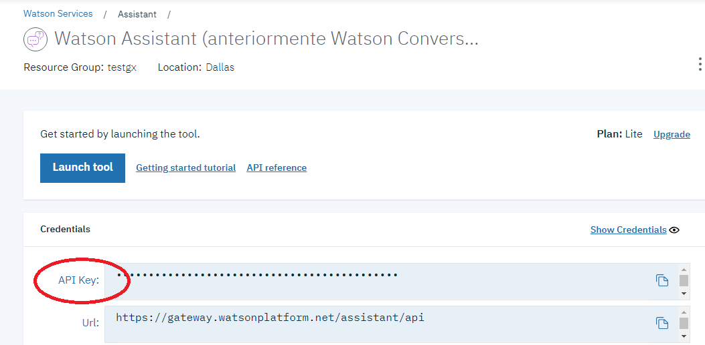
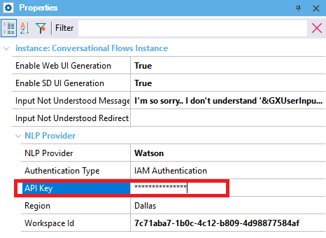

Specify the Watson Assistant API Key. Scope Objects: Conversational Flows Instance Description
When the NLP Provider property is set to Watson and Authentication Type property is set to IAM, you must configure the API key given by IBM, in the API Key property. At the IBM console, select the service from the Catalog -> Dashboard menu, and copy the API key:  Then paste it in GeneXus API key property (under the NLP Provider section of the Conversational Flows object properties dialog):  For more information go to Configure IBM Watson services for the Chatbot generator. To apply changes, just save the Conversational Flows object and it will be synchronized automatically to the NLP provider, in addition to updating the <InstanceName>Chatbot.config file. For more information on this file go to Connecting to the Chatbot Provider. Configuration fileThe configuration file used for saving the value of this property is the *Chatbot.config (the name of the file is the instance name + Chatbot). The file is located in the virtual directory in case of NET, and in the WEB-INF directory of the servlet server in case of Java. AvailabilityThis property is available since GeneXus 16 upgrade 1. |